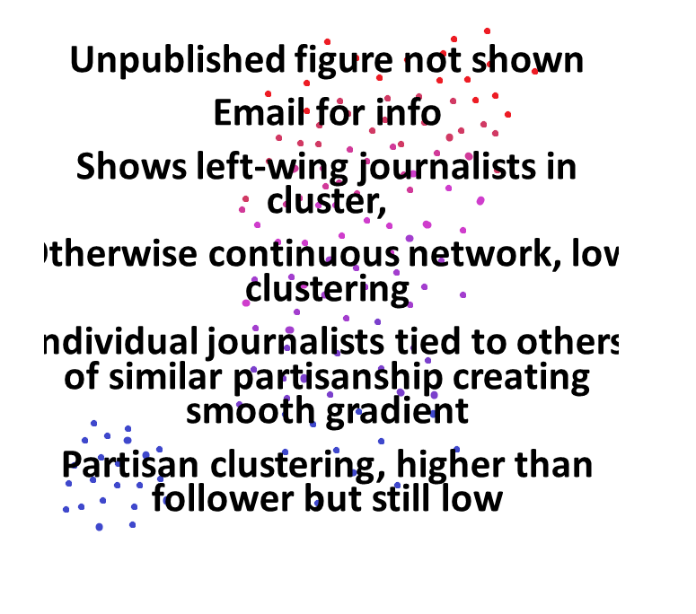

layout: true class: center --- class: middle background-color: white .title[Social Media Network Constructions] .subtitle[How, Why, and How to Interpret] .author[Laila A. Wahedi, PhD] .author[Lisa Singh, PhD, Yiqing Ren, PhD] .date[November 29, 2018] .institution[McCourt School of Public Policy, Georgetown University] <img style="width:20%" src="../figures/seal.png"> .center[] .footnote[ Created with [{Remark.js}](http://remarkjs.com/) using [{Markdown}](https://daringfireball.net/projects/markdown/) + [{MathJax}](https://www.mathjax.org/) + [{Liminal}](http://www.jmlilly.net/liminal.zip) ] --- layout: true name: main class: center .footnote_left[ » Slides at https://wahedi.us under <i>Current Presentation</i> ] .footnote_right[ Laila A. Wahedi • @lwahedi • law98@georgetown.edu ] --- template: main background-color: #F2DC5D <div> <h1> Motivation: Why Social Media Data?</h1> <div style="width:65%; margin: 0 auto"> <h2 style="color:black;">Observe Interactions</h2> </div> </div> --- template: main background-color: #AF002B <div> <h1 style='color:white'>Motivation: Why Social Media Data?</h1> <div style="width:50%; float:left;" > <img style="width:70%" src="../figures/net_text/observe_types.png"> <h2 style="color:white;">Not All The Same</h2> </div> <div style="width:50%; float:left;" > <h2 style="color:white;">Relation ≠ Social</h2> </div> </div> --- template: main background-color: #01BAEF <h2 class="header">Types of Network Construction</h2> <img src="../figures/line.png" class="underline"> <div style="width:90%; margin: 0 auto;"> <table> <tr> <td></td> <td></td> <td><img style="width:85%" src="../figures/net_text/observe_content.png"></td> </tr> <tr> <td><h3 style="color:white;">Exposure</h3></td> <td><h3 style="color:white;">Interaction</h3></td> <td><h3 style="color:white;">Content Similarity</h3></td> </tr> </table> </div> <div style="width:60%; margin: 0 auto;"> <table> <tr> <td><img style="width:85%" src="../figures/net_text/observe_author.png"></td> <td></td> </tr> <tr> <td><h3 style="color:white;">Homophily</h3></td> <td><h3 style="color:white;">Non-human Networks</h3></td> </tr> </table> </div> --- template: main background-color: #01BAEF <h2 class="header">Exposure Networks</h2> <img src="../figures/line.png" class="underline"> <h2 class = "header">Friends, followers, connections, etc</h2> <div style="width:90%; margin: 0 auto;"> <table> <tr> <td></td> <td></td> <td></td> </tr> <tr> <td><h3 style="color:white;">Not imply personal relationship</h3></td> <td><h3 style="color:white;">Greater p(exposure) to content</h3></td> <td><h3 style="color:white;">Chose to follow (past)</h3></td> </tr> </table> </div> --- template: main background-color: #01BAEF <h2 class="header">Exposure Networks: Questions</h2> <img src="../figures/line.png" class="underline"> <h2 class = "header">Friends, followers, connections, etc</h2> <div style="width:100%; margin: 0 auto;"> <table> <tr> <td></td> <td></td> <td></td> </tr> <tr> <td><h3 style="color:white;">Not influence of trust</h3></td> <td><h3 style="color:white;">Diffusion due to exposure</h3></td> <td><h3 style="color:white;">Structure/ Evolution</h3></td> </tr> </table> </div> --- template: main background-color: #6d288e <h2 style="text-transform: none; text-align:left; margin-bottom:0px; color:white;">Political Journalists</h2> <img class="plain" src="../figures/line.png" style="float:left; padding:0;margins:0;margin-bottom:0px; height: 5px; width:76%"> <br> <h3 style="text-transform: none; text-align:left; color:white;">Journalists: Curated list from StatSocial, 3 months prior to 2016 election</h3> <h4 style="text-transform: none; text-align:right; color:white;"> Collaboration with Lisa Singh, Leticia Bode, Ceren Budak, Pamela Davis-Kean, Jonathan Ladd, Zeina Mneimneh, Josh Pasek, Yiqing Ren, Rebecca Ryan, and Michael Tragott</h4> <h3 style="text-transform: none; text-align:left; color:white;">Do have</h3> <div style="width:31%; border: 5px solid #FFFFFF; border-radius: 25px; background-color:#01BAEF; float:left"> <h4 style = "color:white; margin:.5em">Friends and Followers</h4> </div> <div style="width:31%; border: 5px solid #FFFFFF; border-radius: 25px; background-color:#01BAEF; float:left"> <h4 style = "color:white; margin:.5em">User Data <br> </h4> </div> <div style="width:31%; border: 5px solid #FFFFFF; border-radius: 25px; background-color:#01BAEF; float:left"> <h4 style = "color:white; margin:.5em">Tweets from 3mo prior to election</h4> </div> <br> --- template: main background-color: #6d288e <h2 style="text-transform: none; text-align:left; margin-bottom:0px; color:white;">Political Journalists: Followers</h2> <img class="plain" src="../figures/line.png" style="float:left; padding:0;margins:0;margin-bottom:0px; height: 5px; width:76%"> <br> <div style="height:80%;"> </div> --- template: main background-color: #01BAEF <h2 class="header">Interaction Networks</h2> <img src="../figures/line.png" class="underline"> <h2 class = "header">Interactions between users, and with content</h2> <div style="width:90%; margin: 0 auto;"> <table> <tr> <td></td> <td></td> <td></td> </tr> <tr> <td><h3 style="color:white;">Likes/ Favs/ Votes</h3></td> <td><h3 style="color:white;">Reshares</h3></td> <td><h3 style="color:white;">Replies/ Mentions</h3></td> </tr> </table> </div> --- template: main background-color: #01BAEF <h2 class="header">Interaction vs Exposure</h2> <img src="../figures/line.png" class="underline"> <div style="width:90%; margin: 0 auto;"> <table> <tr> <td></td> <td></td> <td></td> </tr> <tr> <td><h3 style="color:white;">Known Exposure</h3></td> <td><h3 style="color:white;">Greater <br> P(future exposure)</h3></td> <td><h3 style="color:white;">Social interactions on exposure structure</h3></td> </tr> </table> </div> --- template: main background-color: #AF002B <h2 class="header">Interaction Networks: Caution</h2> <img src="../figures/line.png" class="underline"> <h2 class = "header">Not necessarily...</h2> <div style="width:90%; margin: 0 auto;"> <table> <tr> <td></td> <td></td> <td></td> </tr> <tr> <td><h3 style="color:white;">Reciprocal/ Targeted</h3></td> <td><h3 style="color:white;">Trust/ Friendship</h3></td> <td><h3 style="color:white;">Agreement/ Disagreement</h3></td> </tr> </table> </div> --- template: main background-color: #01BAEF <h2 class="header">Interaction Network: Interpretation</h2> <img src="../figures/line.png" class="underline"> <div style="width:90%; margin: 0 auto;"> <table> <tr> <td></td> <td><img style="width:100%" src="../figures/net_const/social_cost.png"></td> <td></td> </tr> <tr> <td><h3 style="color:white;">Choice in Time</h3></td> <td><h3 style="color:white;">Varying Cost</h3></td> <td><h3 style="color:white;">Social Interaction</h3></td> </tr> </table> </div> --- template: main background-color: #6d288e <h2 style="text-transform: none; text-align:left; margin-bottom:0px; color:white;">Political Journalists: Retweet</h2> <img class="plain" src="../figures/line.png" style="float:left; padding:0;margins:0;margin-bottom:0px; height: 5px; width:76%"> <br> <div style="width:100%;">  </div> --- template: main background-color: #01BAEF <h2 class="header">Author Similarity: What?</h2> <img src="../figures/line.png" class="underline"> <div style="width:100%; margin: 0 auto;"> <table> <tr> <td><img style="width:50%" src="../figures/net_text/text_mat.png"></td> <td><img style="width:100%" src="../figures/net_text/protractor.png"></td> <td><img style="width:50%" src="../figures/net_text/connection.png"></td> </tr> <tr> <td><h3 style="font-size:1em;color:white;">1. Create Author Vectors</h3></td> <td><h3 style="font-size:1em;color:white;">2. Calculate Distance</h3></td> <td><h3 style="font-size:1em;color:white;">3. Weighted / Thresholded Network</h3></td> </tr> <tr> <td colspan=4> </td> </tr> <tr> <td> </td> <td colspan=3 style="text-align:right;"> <h3 style="color:white;">Relate Authors By Rhetoric</h3> </td> </tr> </table> </div> --- template: main background-color: #01BAEF <h2 class="header">Author Similarity: What?</h2> <img src="../figures/line.png" class="underline"> <div style="width:100%;"> <h3 style="text-align:left; color:white;margin-bottom:0.7em;"> Captures variation in how individuals speak</h3> <table> <tr> <td><div class="redbutton"><h3 style = "color:white; margin:.5em">Dialect / Region</h3></div></td> <td><div class="redbutton"><h3 style = "color:white; margin:.5em">Education / Profession</h3></div></td> <td><div class="redbutton"><h3 style = "color:white; margin:.5em">Ideological Grouping</h3></div></td> </tr> <tr> <td><div class="redbutton"><h3 style = "color:white; margin:.5em">Age</h3></div></td> <td><div class="redbutton"><h3 style = "color:white; margin:.5em">Topic</h3></div></td> <td><div class="redbutton"><h3 style = "color:white; margin:.5em">Subculture</h3></div></td> </tr> </table> </div> <div> <br><br> </div> <div style="width:100%;"> <h3 style="text-align:left; color:white;margin-bottom:0.7em;"> Depends on Sample Variation</h3> <table> <tr> <td style="width:50%;"> <div class="redbutton"><h3 style = "color:white; margin:.5em">Academic Twitter vs Random Sample</h3></div> </td> <td style="width:50%;"> <div class="redbutton"><h3 style = "color:white; margin:.5em">#maga vs<br> #trump</h3></div> </td> </tr> </table> </div> --- template: main background-color: #01BAEF <h2 class="header">Author Similarity: Why?</h2> <img src="../figures/line.png" class="underline"> <div style="width:100%;"> <table> <tr> <td></td> <td></td> <td><img style="width:80%" src="../figures/net_text/hats_grp.png"></td> </tr> <tr> <td class="narrow"><h3 style="font-size:1em;letter-spacing:0.01em;color:white;">Subcultures Exposed to Similar Content</h3></td> <td class="narrow"><h3 style="font-size:1em;letter-spacing:0.01em;color:white;">Capture Unobserved Similarities</h3></td> <td class="narrow"><h3 style="font-size:1em;letter-spacing:0.01em;color:white;">Relationships between Subcultures</h3></td> </tr> <tr> <td colspan=3> </td> </tr> <tr> <td colspan=3 style="text-align:right;"><h3 style="color:white;">Not independent,<br>Even if not social media friends </h3></td> </tr> </table> </div> --- template: main background-color: #01BAEF <h2 style="text-transform: none; text-align:left; margin-bottom:0px; color:white;">Author Similarity: Questions</h2> <img class="plain" src="../figures/line.png" style="float:left; padding:0;margins:0;margin-bottom:0px; height: 5px; width:76%"> <h3 style="text-transform: none; text-align:left; color:white;">As Dependent Variable</h3> <div style="width:48%; border: 5px solid #FFFFFF; border-radius: 25px; background-color:#AF002B; float:left"> <h4 style = "color:white; margin:.5em">What nodal attributes push someone to the edge of a subculture?</h4> </div> <div style="width:48%; border: 5px solid #FFFFFF; border-radius: 25px; background-color:#AF002B; float:left"> <h4 style = "color:white; margin:.5em">Is there more homogeneity among the users of different hashtags?</h4> </div> <div style="width:48%; border: 5px solid #FFFFFF; border-radius: 25px; background-color:#AF002B; float:left"> <h4 style = "color:white; margin:.5em">What sort of individuals bridge communities?</h4> </div> <div style="width:100%; "> <h2 style="text-align:left; margin-top:8em; color:white;">As Explanatory Variable</h2> <div style="width:48%; border: 5px solid #FFFFFF; border-radius: 25px; background-color:#AF002B; float:left"> <h4 style = "color:white; margin:.5em">Is there a relationship between clusters and sub-culture labels?</h4> </div> <div style="width:48%; border: 5px solid #FFFFFF; border-radius: 25px; background-color:#AF002B; float:left"> <h4 style = "color:white; margin:.5em">How do the resulting clusters relate to one another?</h4> </div> </div> --- template: main background-color: #78881f <h2 style="text-transform: none; text-align:left; margin-bottom:0px; color:white;">Author Similarity: Russian Trolls</h2> <img class="plain" src="../figures/line.png" style="float:left; padding:0;margins:0;margin-bottom:0px; height: 5px; width:76%"> <br> <h3 style="text-transform: none; text-align:left; color:white;">Data: ~3M tweets from ~3k known accounts from the Internet Research Agency</h3> <h4 style="text-transform: none; text-align:right; color:white;"> Released by FiveThirtyEight and <br>The Clemson Social Media Listening Center</h4> <h3 style="text-transform: none; text-align:left; color:white;">Do have</h3> <div style="width:31%; border: 5px solid #FFFFFF; border-radius: 25px; background-color:#01BAEF; float:left"> <h4 style = "color:white; margin:.5em">Tweet text and time</h4> </div> <div style="width:31%; border: 5px solid #FFFFFF; border-radius: 25px; background-color:#01BAEF; float:left"> <h4 style = "color:white; margin:.5em">Url redirects</h4> </div> <div style="width:31%; border: 5px solid #FFFFFF; border-radius: 25px; background-color:#01BAEF; float:left"> <h4 style = "color:white; margin:.5em">Is quote or retweet</h4> </div> <br> <div style="clear: both; float: left; display: block; position: relative; margin-top: 2em"> <h3 style="text-transform: none; text-align:left; color:white;display:inline-block;clear:both;">Don't have</h3> </div> <div style="clear: both; float: left; display: block; position: relative;width:100%"> <div style="width:31%; border: 5px solid #FFFFFF; border-radius: 25px; background-color:#AF002B; float:left"> <h4 style = "color:white; margin:.5em">Friends / Followers</h4> </div> <div style="width:31%; border: 5px solid #FFFFFF; border-radius: 25px; background-color:#AF002B; float:left"> <h4 style = "color:white; margin:.5em">Retweet user id</h4> </div> <div style="width:31%; border: 5px solid #FFFFFF; border-radius: 25px; background-color:#AF002B; float:left"> <h4 style = "color:white; margin:.5em">Interactions</h4> </div> </div> --- template: main background-color: #78881f <h2 style="text-transform: none; text-align:left; margin-bottom:0px; color:white;">Russian Trolls</h2> <img class="plain" src="../figures/line.png" style="float:left; padding:0;margins:0;margin-bottom:0px; height: 5px; width:76%"> <br> <div style="width:100%;"> <img style="width:80%;max-height:100%" src="../figures/net_text/author_similarity_troll.png"> </div> --- template: main background-color: #6d288e <h2 style="text-transform: none; text-align:left; margin-bottom:0px; color:white;">Political Journalists</h2> <img class="plain" src="../figures/line.png" style="float:left; padding:0;margins:0;margin-bottom:0px; height: 5px; width:76%"><br> <center><div style="width:100%; "> <div style="width:50%;"> <h2 style = "color:white;">How Does News Spread Among Journalists?</h2> </div> </div></center> <div style="width:100%; margin-bottom:1em"> <div style="width:48%; float:left; background-color:#AF002B; border: 5px solid #FFFFFF; border-radius: 25px;"> <h4 style = "color:white;">1. Identify bursty ngrams each day for 3 months around election<br> </h4> </div> <div style="width:48%; float:left; background-color:#AF002B; border: 5px solid #FFFFFF; border-radius: 25px;"> <h4 style = "color:white;">2. Construct network: Ex] Tie from A to B if B uses "anti-choice" within an hour after A. </h4> </div> </div> <div style=" float: left; width:100%"> <div style="width:48%; float:left; background-color:#AF002B; border: 5px solid #FFFFFF; border-radius: 25px;"> <h4 style = "color:white; ">3. Compare to follower and retweet networks (Future)</h4> </div> <div style="width:48%; float:left; background-color:#AF002B; border: 5px solid #FFFFFF; border-radius: 25px;"> <h4 style = "color:white; ">4. Network model, p(tie_content| tie_follow) (Future)</h4> </div> </div> <p style="color:white"> Work with Lisa Singh, Leticia Bode, Ceren Budak, Pamela Davis-Kean, Jonathan Ladd, Zeina Mneimneh, Josh Pasek, Yiqing Ren, Rebecca Ryan, and Michael Tragott</p> --- template: main background-color: #6d288e <h2 style="text-transform: none; text-align:left; margin-bottom:0px; color:white;">Political Journalists</h2> <img class="plain" src="../figures/line.png" style="float:left; padding:0;margins:0;margin-bottom:0px; height: 5px; width:76%"> <br> <div style="width:100%;"> <img style="width:80%;max-height:100%" src="../figures/net_text/journalist_content.png"> </div> --- template: main background-color: #01BAEF <h2 class="header">Homophily Network</h2> <img src="../figures/line.png" class="underline"> <h2 class="header"> Generalization of Author Similarity </h2> <h2 class="header"> Such as... </h3> <div style="width:90%; margin: 0 auto;"> <table> <tr> <td></td> <td></td> <td></td> </tr> <tr> <td><h3 style="color:white;">Same Graduating Class</h3></td> <td><h3 style="color:white;">Geographic Distance</h3></td> <td><h3 style="color:white;">Employment History</h3></td> </tr> </table> </div> --- template: main background-color: #01BAEF <h2 class="header">Homophily Network: Why?</h2> <img src="../figures/line.png" class="underline"> <h2 class="header"> May Indicate... </h3> <div style="width:90%; margin: 0 auto;"> <table> <tr> <td></td> <td></td> <td></td> </tr> <tr> <td><h3 style="color:white;">Unobserved Social Relation</h3></td> <td><h3 style="color:white;">Unobserved Similarity</h3></td> <td><h3 style="color:white;">Similar Exposure to External Content</h3></td> </tr> <tr> <td colspan=3 style="text-align:right;"><h3 style="color:white;">Not independent,<br>Even if not social media friends </h3></td> </tr> </table> </div> --- template: main background-color: #01BAEF <h2 class="header">Homophily Network: Questions</h2> <img src="../figures/line.png" class="underline"> <div style="width:90%; margin: 0 auto;"> <table> <tr> <td></td> <td></td> <td></td> </tr> <tr> <td><h3 style="color:white;">Is there clustering among attribute sets?</h3></td> <td><h3 style="color:white;">Observe distribution of attribute values</h3></td> <td><h3 style="color:white;">How does attribute closeness affect P(interact)</h3></td> </tr> <tr> <td colspan=3 style="text-align:right;"><h3 style="color:white;">Not independent,<br>Even if not social media friends </h3></td> </tr> </table> </div> --- template: main background-color: #01BAEF <h2 class="header">Non-Human Networks</h2> <img src="../figures/line.png" class="underline"> <h2 class="header">Networks of concepts</h3> <div style="width:65%; margin: 0 auto;"> <table> <tr> <td></td> <td></td> </tr> <tr> <td><h3 style="color:white;">Bipartite</h3></td> <td><h3 style="color:white;">Unipartite</h3></td> </tr> </table> </div> <h2 class="header" style="float:right"> Map Attribute Space</h2> --- template: main background-color: #01BAEF <h2 class="header">Non-Human Networks: Examples</h2> <img src="../figures/line.png" class="underline"> <div style="width:90%; margin: 0 auto;"> <table> <tr> <td></td> <td></td> <td><img style="width:100%" src="../figures/net_const/hats_grp.png"></td> </tr> <tr> <td><h3 style="color:white;">Topics/ Text</h3></td> <td><h3 style="color:white;">Geographic Area</h3></td> <td><h3 style="color:white;">Profession</h3></td> </tr> <tr> <td colspan=3 style="text-align:right;"><h3 style="color:white;">Not independent,<br>Even if not social media friends </h3></td> </tr> </table> </div> --- template: main background-color: #78881f <h2 style="text-transform: none; text-align:left; margin-bottom:0px; color:white;">Russian Trolls</h2> <img class="plain" src="../figures/line.png" style="float:left; padding:0;margins:0;margin-bottom:0px; height: 5px; width:76%"> <br> <h2 style="text-transform: none; text-align:left; color:white;">What can we learn about how the IRA operated?</h2> <h2 style="text-transform: none; text-align:left; color:white;">How coordinated were the operations?</h2> <h3 style="text-transform: none; text-align:left; color:white;">To what extent do the trolls communicate unified messages? </h3> <h4 style="text-transform: none; text-align:right; color:white;">If well coordinated, we expect to see groups of trolls <br>promoting similar hashtags.</h4> --- template: main background-color: #78881f <h2 style="text-transform: none; text-align:left; margin-bottom:0px; color:white;">Russian Trolls</h2> <img class="plain" src="../figures/line.png" style="float:left; padding:0;margins:0;margin-bottom:0px; height: 5px; width:76%"> <br> <div style="width:100%;"> <img style="width:80%;max-height:100%" src="../figures/net_text/dynamic_troll_bipart.gif"> </div> --- template: main background-color: #01BAEF <h2 class="header">Conclusion</h2> <img src="../figures/line.png" class="underline"> <div style="width:100%; margin: 0 auto;"> <table> <tr> <td></td> <td></td> </tr> <tr> <td><h3 style="color:white;">Consider Tie Meaning in Context</h3></td> <td><h3 style="color:white;">Many Relations, <br>Not All Social</h3></td> </tr> <tr> <td></td> <td><img style="width:40%" src="../figures/net_const/net_interact.png"></td> </tr> <tr> <td><h3 style="color:white;">Account for Interdependence</h3></td> <td><h3 style="color:white;">Interactions Between Networks</h3></td> </tr> </table> </div> --- template: main background-color: #F2DC5D <h2 style="text-transform: none; text-align:left; margin-bottom:0px; color:black;">Acknowledgements and Thanks</h2> <img class="plain" src="../figures/line.png" style="float:left; padding:0;margins:0;margin-bottom:0px; height: 5px; width:76%"><br> <h4 style = "color:black; ">Work in collaboration with Lisa Singh and the GU Data Lab</h4><br> <h4 style = "color:black; ">Work partially funded by a MIDAS grant</h4><br> <h4 style = "color:black; ">Icons made by or adapted from Freepik from www.flaticon.com is licensed by CC 3.0</h4> ---